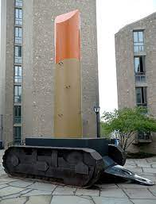

150. Lipstick (Ascending) on Caterpillar Tracks. Claes Oldenburg. 1969-1974 CE. Cor-Ten steel, steel, aluminum, and cast resin; painted with polyurethane enamel.
- Function
- First Installed, secretly, on Beinecke Plaza, New Haven, in 1969
- Intended as a platform for public speakers; rallying point for anti-Vietnam-era protests
- Materials
- Sculpture made of inexpensive and perishable materials
- Refurbished with steel and aluminum; reinstalled in 1974 in front of Morse College, at Yale–not its original location
- Context
- Tank-shaped platform base with lipstick ascending–antiwar symbolism
- Male and female forms unite: themes of death, power, desire, and sensuality
- First monumental sculpture by Oldenburg